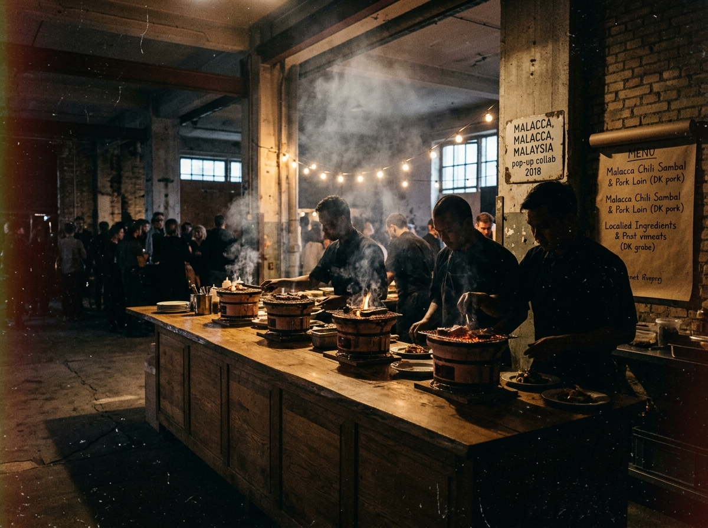

2018
The Nordic-Kyoto Atelier
An 8-seat clandestine pop-up established in Copenhagen's Refshaleøen shipyard. Cooking solely over imported binchotan inside a raw concrete shell, testing forty varieties of wild Danish seaweed against house-grown koji strains.
